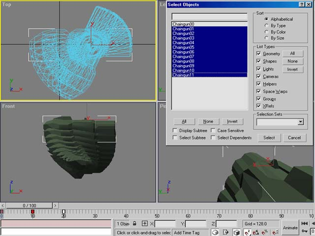

3D Studio Max Weapon Modeling And Import
Note: This tutorial applies mostly to Unreal Tournament. It is also very hard to do clearly so if you have any questions or corrections, please add them in as comments. I can now see why so few tuts on this subject exist 
Discaimer: This is the way I animate and import weapons. There are approximately 1,000,345 different ways of doing it, with at least 1,000,000 of them being more efficient/better than mine. What I am passing on is what I learned by scouring the net for scant information on the subject and just basic trial and error. What I do know is that this way works To be honest I do things a bit more efficiently, but it is easier to explain it this way and let the person reading it come up with their own better ways of doing it after they are comfortable.
In this tutorial on making weapon models for Unreal Tournament using 3ds2unr, I'm assuming that you are comfortable with 3D Studio Max R3.1 or later. 2.X should be fine although you may find some features missing that I talk about (not sure). This tutorial will not explain the in's and out's of modeling and texturing your weapon, only the basics on how to animate it and export it correctly into Unreal Tournament.
Getting Started
Model Setup (note that this is for a weapon with one texture, I will explain multi-textured first person view weapon models later):
- Face the forward part of the model to the right in the top viewport. This will save having to alter the script to get the model facing the right way.
- Name your weapon mesh Something00 (Something being whatever name you want).
- It must not be bigger than a 256x256 grid extent centered on the origin. You can scale it to suit in script later so don't fret over that yet. All animations need to reside inside the 256x256 box also (i.e. if the kickback animation leaves the bounding box even by a decimal 3ds2unr will conk out on you).
- Place a blank material (or a multi sub-object material if it has more than one texture) on the object called "Skin".
- Collapse the stack or convert to an editable mesh (same outcome) and then go to Utilities and choose Reset X-Form (X-form stands for "transform," much like Transform Permanently works in UnrealEd). Converting to an editable mesh even if it is already one is important before hitting Reset X-Form to keep faces that you may have created or mirrored from flipping their normals. Hit the Reset Selected button and then collapse the stack again. This ensures the pivot point is nicely centered after import into Unreal Tournament.
Animating
Quick Explanation of Vertex Animation
Vertex animation works like this: Each frame of animation is basically a copy of the mesh, just slightly different, like the little stick figure cartoons you used to draw in school on little pads of paper (you flip the pages and it animates). The .3d files (the file format vertex animation in UT uses) contains a model with these frames of animation and is basically X number of copies of the model super-imposed on one another with X being the number of frames.
In Max we use the Snapshot tool to make these super-imposed versions of our animated model. The product of this is what gets exported from Max as the .3ds file. The Snapshot tool asks what frames you want super-imposed (0-15 for example), the number of copies (in our example it would be 16 since 0-15 is 16 copies), and will do all the hard work for you. All this will be explained in detail below.
The beginning and ending of each animation (if the animation begins or ends with the weapon in view) needs to have the same exact postioning. For instance, a firing animation sequence starts, recoils back, and comes back to rest in the exact same postion (it's "rest" postion) it started in. If there is any difference, the gun will appear to jump around in view and look terrible. A good rule of thumb is to save a seperate copy of your .max file with a just a one frame animation of your weapon sitting in it's "rest" position. The exception to this rule are animations that start or end out of view such as a Select and Deselect animations which in these cases the weapon only needs to end in it's "rest" postion and start in it's "rest" postion, respectively.
Standard Animations
Firing Animation
- First, setup your 3D viewport window so the gun looks as it would in first person. This can give you a semi-accurate view of what it will look like animating in game. Save the Max file as something like
Rest_Position.maxor whatever. - Now move the animation slider to keyframe 1 or 2, hit the Animate button in the lower right, and move/rotate your model into a kickback postion or however it would be postioned when the weapon is fired. Turn off the Animate button, select the first Keyframe at 0 and hold down shift (to clone the key) and drag the cloned keyframe to keyframe 5. Now hit play to see it run through it's firing sequence. It will do this fairly quickly but the code can slow it down later when it's imported into the game. Jump back and forth from key 1 and 5 to make sure the model doesn't move. Save this file as
Firing.max(or whatever as long as you know it's the firing animation file) and re-open the "rest" postion .max file you saved earlier.
Alt Firing Animation
Now we need an altfire animation. If your weapon has no alt-fire, skip this step. Pretty much just repeat the same process as above, saving the file as Alt_fire.max or whatever.
Select and Deselect Animations
Now for the Deselect and Select animations which we will include in one file since both animations don't begin and end in the "rest" posistion. Open your rest postion .max file, move the slider to keyframe 10, hit the Animation button, and move/rotate your model out of view below. Turn off the animation button. Now select the first keyframe at 0, hold shift and clone/drag it to keyframe 20. Play the animation and it should go out of view and then come back into view, ending at it's "rest" postion. Save this file as Select_Deselect.max or something.
Looping Animations
If you need any repetitious animations that loop, such as a spinning barrel, only animate one cycle. For instance, for the spinning barrel, only animate one rotation. Exceptions to this are things like vibration animations (like the Impact-Hammer charging animation) where you want some variety.
We now have the minimum amount of animations needed to get a weapon into UT. Actually we still need a 1 frame "Still" animation that's played when the weapon isn't doing anything but we can get that from any other animation's "rest" frame so it doesn't need it's own file.
Exporting Your Animations
Export your Fire/Alt-Fire and other Standard Animations.
- Open your
Firing.max(or whatever) file and select your weapon. Go to Tools>Snapshot. A window will pop up that looks like this:
- Click the radio button labeled Range, enter 0 for From and 5 for To and make sure the Mesh radio button is selected (it usually is by default). Select OK. You will now see a bunch of meshes including your original mesh, each one called Something01 through Something05 (with Something00 being your original mesh you snapshotted). Press H (the Select by Name hotkey) and a window will pop up listing all the objects in your scene. Now select Something01, hold down Shift, and while still holding Shift select Something05. This will select Something01 and Something05 as well as all the ones in between. Make sure you don't include Something00 (the source mesh that was snapshotted) as 3ds2unr wants all meshes labeled from "01-0X" in the .3ds file. Notice that Something01 is a copy of Something00. See Figure B below for more info.
- Now, while Something01 through Something05 is selected, go to File → Export Selected. Export the meshes as a .3ds file named
Fire.3ds. Make sure you choose Export Selected and not just plain old Export. Once finished, close the scene without saving it. - Repeat the process for your alt-fire animation if you have one and any other animations you need. Make sure you input the correct animation frames and copies in the Snapshot tool window. For example, if your alt-fire animation starts from 0 and ends at 13, enter From=0 and To=13 with 14 copies (the 0 is inclusive!). Name your .3ds file
Altfire.3dsorFire2.3dsor anything really.
Exporting Your Select and Deselect Animations
- Since the Select and Deselect animations are in the same file we will do things slightly different this time. We'll basically be snapshotting the file twice since we need to export two .3ds files. Select your weapons and go to Tools>Snapshot again. Select Range, enter 0 in From and 10 in To and enter 11 in Copies. Hit OK. Hit H, select Something01 through Something11, hit OK, choose Export Selected and export the files as
Down.3ds. It is important that you name itDown.3dsfor reasons I will explain below. - Now either Undo until you are back to before you snapshotted the weapon, or close the file without saving and re-open it. Once back to square one, select Snapshot, make sure Range is selected, enter 10 in From and 20 in To. Enter 11 for Copies and make sure Mesh is selected as the output. Hit ok. Hit H, select Something01 through Something11, choose Export Selected and name the exported file
Select.3ds. It is important to name this fileSelect.3dsfor reason I will explain below.

|
Select/Deselect Naming Conventions
In UnrealScript, when an action that requires an animation is called, it gets the info from a function in the weapon's code. For instance, when a person presses the alt-fire on a Shockrifle, the code knows to play the animation "Fire2" since it's called in the Shockrifle code's alt-fire play animation function. Since every weapon has to have a Select and Deselect animation and they are never looped or anything funky like that, Epic saw fit to place those play animation functions in every weapon's parent class, TournamentWeapon, and they chose "Down" and "Select" as their animation names. So basically, if you name your Select and Deselect animations as "Select" and "Down", you don't have to write the play animation functions for them. If you must name them something else or want to change the rate at which the select or deselect animation (or both) is played, you can override the TournamentWeapon function in your weapon's code. This is starting to leave the scope of this tutorial so just make sure you name them "Down" and "Select".
Exporting the Still Animation
You now need a one frame animations called "Still". There are a few ways to do this with the Snapshot tool (or without) but for simplicity we'll do it the same way we did the others. Open the Rest_Position.max file, go to Tools → Snapshot, and enter 0 in From and 0 in To, make the number of Copies 1, and hit OK. Press H, select Something01, hit OK, go to Export Selected, and save it as Still.3ds.
Move your .3ds files that you exported into the same directory as your 3ds2unr.exe. On to Part2 3ds2unr
Related Topics
Discussion
Unknown: On my hunt to correct spelling, this page came up in a search for modelling' but there is only modeling' in this page.